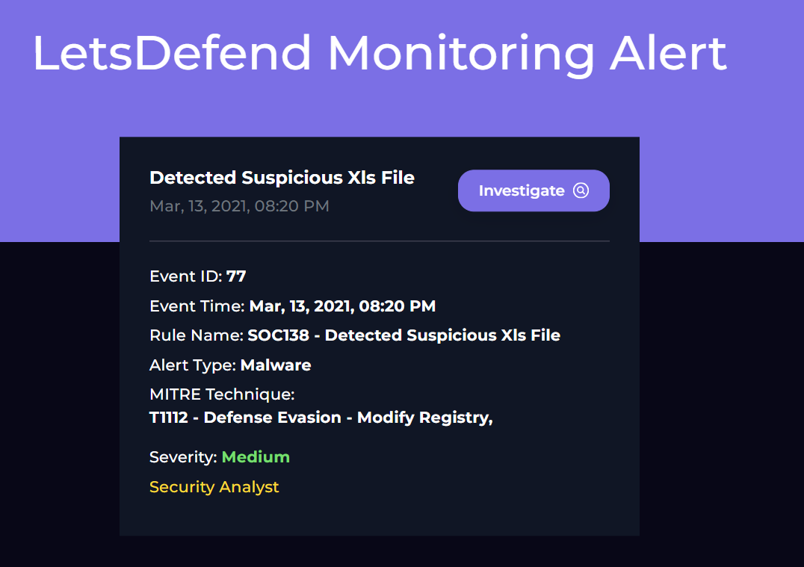
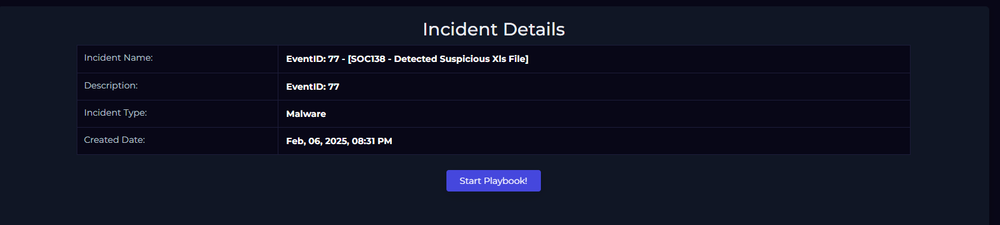
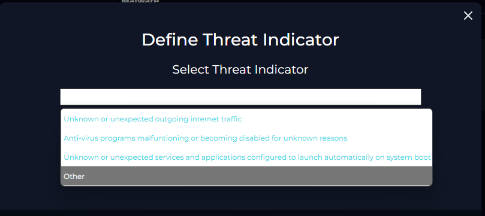
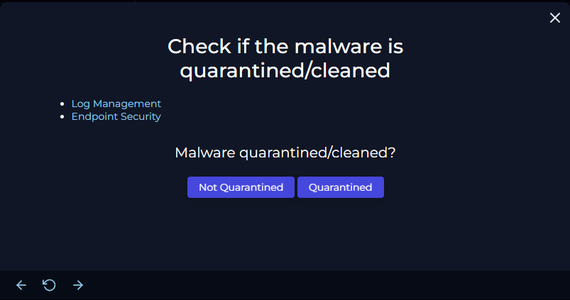
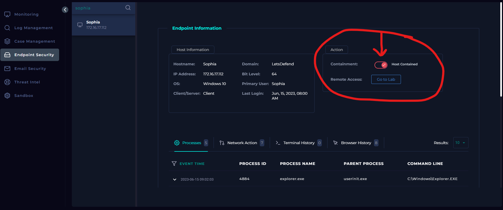
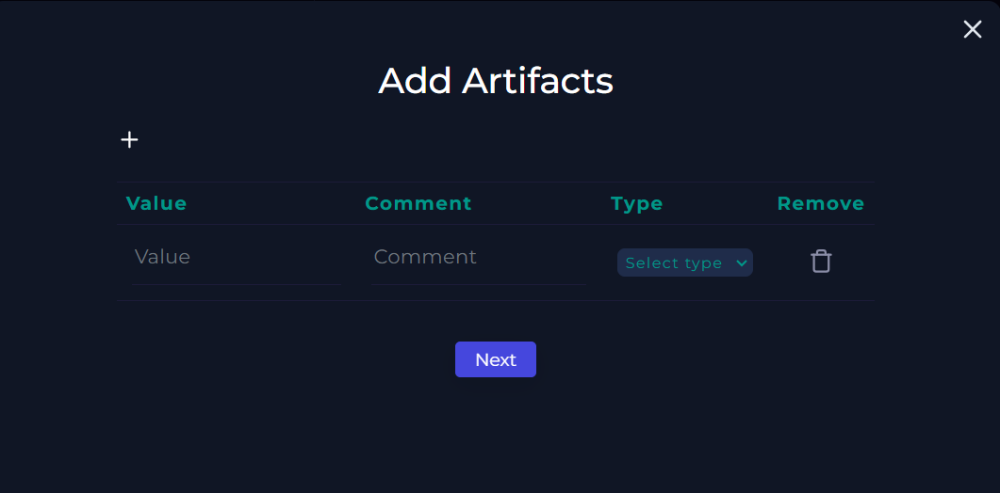
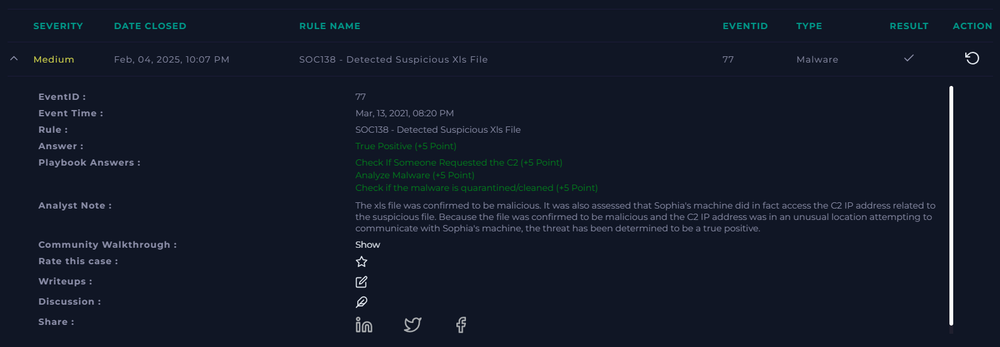

SOC Analyst SIEM exercise - Detected Suspicious Xls File (LAB)
This challenge involves the use of Let's Defend's virtual SIEM setup which allows the user to explore built-in tools such as log management, endpoint security, Threat Intelligence, Email Security, and so on. In this post, I will be explaining my strategy to solve the SOC138 Challenge alert investigation. Below is an image showing exactly what this challenge looks like initially:

Here, we can see a small rundown of the alert. When we go into the main investigation channel, however, we can view the alert in more detail as well as a few more important initial steps we can take before beginning the investigation. So, let's have a look at SOC138 in the main investigation channel:

Each of these fields are important to take note of. For me, I like to either have this information written down, or have it accessible quickly in order to reference it while I am investigating using different tools. This is a good time to set up your information for easy referencing.
Now, to begin, before we can even start the investigation, we need to take ownership of the ticket. We do this by accepting it and creating a case. In the Let's Defend SIEM environment, we can do this by clicking the arrows in the upper right corner which look like this: >>. From there, we can create a case for the alert, thereby taking ownership of the ticket to begin our investigation. With our information ready and ownership of the alert established, we are now ready to start investigating.

To begin the investigation, we will work through the playbook (see above). A playbook is essentially a guide to follow when assessing and investigating an alert. It's a good tool to utilize because our memory can often be faulty and perhaps we could forget to include a certain step. A playbook allows us to be consistent in our investigations across different alerts. Once you take ownership, you will be prompted by the playbook which will walk you through different tasks and questions.
The first question is regarding the definition of the threat indicator. Here, I selected "other," because none of the definitions fit what the threat really was. The threat is a suspicious file that may contain malicious code or malware. Since no description fit that, I chose "other," here. In reality, were I to choose an option like this at a job, I would further provide an accurate description of the threat instead of simply selecting other.

Now that we have that out of the way, we need to perform an action that wasn't really included in the playbook itself. We need to analyze this malware using a malware analysis tool. For this, I chose to use VirusTotal. VirusTotal is a service that allows you to scan files, domains, IPs and URLs for malware and other threats, and share them with the security community. There are many to choose from, but this suited my purposes fine. We can scan this file by grabbing the file hash from the event information in the second image. The hash value is "7ccf88c0bbe3b29bf19d877c4596a8d4". Now, we take that hash value over to VirusTotal, plug it into the analysis search, and we get the results. Below we can see that several security vendors have confirmed the maliciousness of the file along with a description of what the malware actually does when a user runs it:


So now we know that the file is in fact malicious and what exactly the malware does once it is ran.
On to question 2:

So the question is has the malware been quarantined? Or has it been cleaned? My answer to this was "Not Quarantined," and I will explain why.
When assessing this part of the playbook, I looked at the targeted machine's (Sophia) network data. To see the information on her machine, go back up and look at the second image which contains the event information. Now, using her IP, I went to the Log Management tab and filtered results based on her IP address. Below is the image of the results of searching her logs:

While this does not tell us if the file has been quarantined, it does show that there is traffic between her device and a DEST. Address with an IP of 177.53.143.89 along with the port number. This communication took place on the exact date that the alert was issued, so I am confident this is connected to the suspicious file. When you examine the raw log (magnifying glass on far right), it appears that there is data transmission involved, though non-readable.
I am not convinced the malware is gone, and in fact I am concerned it is still on the device since there appears to be communication. I go ahead and check the Endpoint Security for further analysis below:

I reviewed the processes tab, the network action, the terminal history and browser history for Sophia's machine. There was nothing to be found neither on the date of the alert event nor the suspicious file. I also did not find anything determining the file was deleted or removed. There appeared to be no trace of the file left on the machine, but there was also no trace of the file being quarantined itself - no indications of persistency other than the communication from Sophia's machine. I could not find the removal of the file, but traffic was still occurring.
For this reason, I chose "Not Quarantined".
You will then be prompted to use some sort of service to scan the malware. We already did that in the previous steps! We uploaded the file to VirusTotal and determined it was malicious. So for this step, we simply select the option "malicious".
Next, you will be asked to go to log management and check if the C2 address was accessed. Well, we covered that as well! Go up a couple of pictures to the one that has "log management" highlighted. This is where we saw that the src address (Sophia's machine) was accessing a suspicious IP that corresponded to the date of the alert. When I took this destination IP and ran it in Virus total, it appeared to belong to a server in Brazil. I determined this was likely the IP of the C2 server.
Because of this, I selected the option "Accessed".
The follow up after selecting this option is to then contain Sophia's machine. This was simple enough, simply access the endpoint security and find Sophia's machine. From there, toggle the selection to the right that says "containment," as seen in the picture here:

The host machine is now contained for further analysis.
Now we are nearing the end, adding artifacts. Here I always add any important information that someone would need to assess the problem quickly, but also accurately. I add any variables I consider important, but not ALL information since that can be found in the event alert itself as well as a following write-up of the incident in more detail. Some examples I chose were:
- the IP address of the suspicious C2 server in Brazil along with location
- the strange data values found in the raw log that were being sent from Sophia's machine
- any other bits if information that are important and relevant

Up next, the Analyst Note. In this portion, I like to summarize the entire process briefly, but also technically and with intention. Imagine communicating the issue and resolve to a supervisor who needs an efficient understanding of the alert without excess communication. Try to effectively communicate what happened, which actions you took, what your determinations were and why, and finally what the conclusion was - a false positive or true positive.
For this lab exercise, it was a true positive. A malicious file was accessed by a user that was exfiltrating data of some sort while also communicating with some level of persistency on Sophia's machine. We scanned the file, determined if it was malicious, checked network logs and endpoint accesses, contained the device, and followed up with adding artifacts and an analyst note.
Now finish by pressing confirm. You should be back at the main investigation channel now. It's time to click the checkmark found to the right of the alert. This is the final step, closing the investigation. Here you will determine whether the instance was a true or false positive, as well as writing a small note. I am more brief in this note, as it is essentially a micro-version of the analysis note and describes the process more generally.
So now let's look at our results!

All of the answers are correct, our analyst note looks good, and we have successfully completed the alert "SOC138 - Detected Suspicious Xls File"!